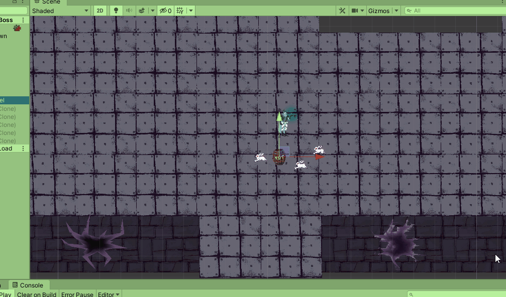

Zakończony
Typ projektuStudia / zespołowy (4 osoby)
Teraz / solo
Czas trwania~dwa miesiące (studia/2017)
~lipiec 2020 - listopad 2022
Użyte oprogramowanieUnity Engine, Audacity, Gimp
Główne role 2017Programista / Level designer / Combat Designer
Główne role 2020/2022Tak
Projekt ten rozpoczął się na drugim roku w Collegium Da Vinci. W projekcie brało udział trzech programistów oraz grafik. Celem było stworzenie gry łaczącej ze sobą gatunku platformer, top-down oraz endless runnera. Jest to mój pierwszy projekt w Unity Engine, dzięki któremu nauczyłem się mnóstwo rzeczy o Unity i C#. W lipcu 2020 postanowiłem dopracować projekt, poprzez dodanie wielu brakujących rzeczy np: animacji dla postaci, dopracowanie głównych mechanik oraz poprawa wizualia. Pierwsze prace rozpocząłem od przepisania wszystkich skryptów, a następnie dodałem szablon Universal Render Pipeline.
-
mechaniki dla poziomów w top-down
-
object pooling dla pocisków gracza oraz bossa
-
pościg królików oraz hordy
-
zaprogramoawnie przeciwnika oraz walki z bossem
-
tworzenie map dla poziomów w top-down
-
zakodowanie strażnika wraz z marchewką
-
ekran tytułowy, menu oraz opis historii
-
implementacja oraz edytowanie efektów dźwięków
-
oskryptowanie UI
-
współpraca z zespołem
Krótki opis zmienionych rzeczy. Na dole znajduje się galeria z porównaniami oraz pomniejsze opisy pomiędzy zdjeciami.
Odświeżenie postanowiłem rozpocząć od dodania URP i wykorzystaniu 2D Light do budowy ośwetlenia i klimaty scen. Postanowiłem też porzucić poziomy platformowe na rzecz skupienia się top-down oraz endless run-owych poziomów. Wszystkie poziomy top-down zostały zrobione od nowa oraz powiększone, by dać możliwość eksploracji poziomów. Większość 2D artów została przerysowana lub całkowicie stworzona od nowa. Na scenach porozmieszczane są różne obiekty z którymi można wejść interakcje np: z drewnianych beczek, po ich zniszczeniu wyskakuje losowa ilość monet, które można wykorzystać do handlu , krzewy, które oświetlają środowisko, poruszają się gdy w nie wejdziemy i zostanie odpalony particle effect wraz z dźwiękiem. Stan beczek, barier lub skrzynek, zostaje zapisany po przejściu do innego poziomu i po powrocie są przesuwane lub dezaktywowane, w zależności od tego co zrobiliśmy z nimi wcześniej. Dodałem też "sianko", które stanowi odpowiednik save pointów, do którego wracamy po śmierci. Stworzyłem też AudioManager, które zadaniem jest płynna zmiana dźwięków w zależności od sytuacji, inny dźwięk będzie podczas biegu w lesie lub ucieczki, całkowicie inny uruchamia się podczas rozpoczęcia walki. Wszystkie dźwięki występujące w środowisku zostały przerobione na spatial 3D, byśmy mogli je słyszeć z lewej lub prawej strony.

Particle effect wybuchu

Jeden z efektów podczas wybuchu beczki jeśli uda nam się pokonam przeciwnika, odlatują one wtedy do boków ekranu i dodatkowo na gif-ie nie widać leci wraz z nimi czarny dym.
Podstawowy przeciwnik królik został całkowicie przerobiony, otrzymał swoje animacje dla dwóch ataków, particle effecty oraz dźwięki. Przeciwnicy są podzieleni na grupy, jeśli gracz zaalarmuje jednego przeciwnika ten wtedy zaalarmuje resztę z swojej grupy. Z niektórych przeciwników wypadają "Evil Carrotine", która ucieka przed nami lub wykona atak dystansowy przeciwko nam. Jeśli uda nam się ją zabić dostaniemy dodatkowe monety do wykorzystania w sklepie. Dodałem też kolejnego przeciwnika "Celery", który ma dwa ataki z bliska, a jak oddalimy się od niego za daleko, wtedy zaczyna się turlać w naszym kierunku, gdy zbijemy mu 75% życia, wtedy zaczyna migać i przyspiesza, wokół niego pojawia się obszar wybuchu. Mamy wtedy kilka sekund, by pokonać zanim wybuchnie. Każdy z przeciwników ma swoją małą cutscenkę wprowadzającą. Są też pomieszczenia, gdzie poruszają się "Carrotine"-s, które gdy się do nich zbliżymy, poruszają się za nami i możemy im wydawać rozkazy. Dodatkowo przy przejściu do innego poziomu zapisywany jest stan przeciwników, więc gdy pokonamy przeciwników w jednym poziomie i wrócimy do niego z innego, to oni nie pojawią się, dopiero po śmierci gracza następuje restart i pojawiają się od nowa. Przeciwnicy otrzymali także pathfinding (A* Pathfinding Project), wcześniej poruszali się po linii prostej do gracza bez omijania jakichkolwiek przeszkód.

Kolejnym krokiem było rozwinięcie walki z głównym bossem. Został on całkowicie przerobiony, dostał animacje i dodatkowe efekty dźwiękowe. Posiada teraz trzy fazy, każda z nich prowadza dodatkowe ataki, a trzecia rozpoczyna się bullet hellem, który należy przetrwać. Na arenie znajdują się cztery leczące marchewki oraz cztery skrzynie w każdym rogu areny, gdzie można się ukryć i odetchnąć, aż do trzeciej fazy, gdzie zostają spalone. Przed areną ustawiony jest też spawn point aka bonfire, gdzie po porażce możemy wrócić szybciej do walki.